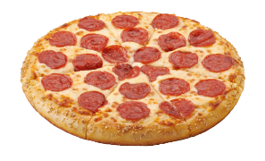
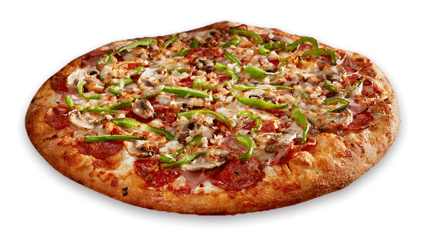

Our profile
The homemade pizza dough is produced in-house daily and is another reason why the pizza at Pizza Inn always tastes better. The Twisty Bread, the signature Wingz and the delicious Double Meal are additional value-for-money options that keep our satisfied customers coming back time after time. These are the meals that have made our Terrific Tuesday everyone’s favourite day of the week. When entertaining, a Hawaiian, a Regina, or a Peri Peri Chicken pizza from Pizza Inn is the obvious and perfect option to please crowds of all ages.
Our Pizza Crusts
Cast Iron
Another thick style of pizza. Made in a cast iron pan. The pan is usually greased with lard or butter.
Flatbread

An extremely thin pizza shaped with a rolling pin. As a result the gas bubbles are forced out, causing the pizza to stay flat.

New ENgland Style

A regional style of pizza made in New England by Greek-owned pizzerias. Made with bread flour or high gluten flour in oiled pans.
New Jersey
Thin, typically made with high gluten flour. Baked at 450-550F. The Jersey style is "upside down". Cheese first, then sauce